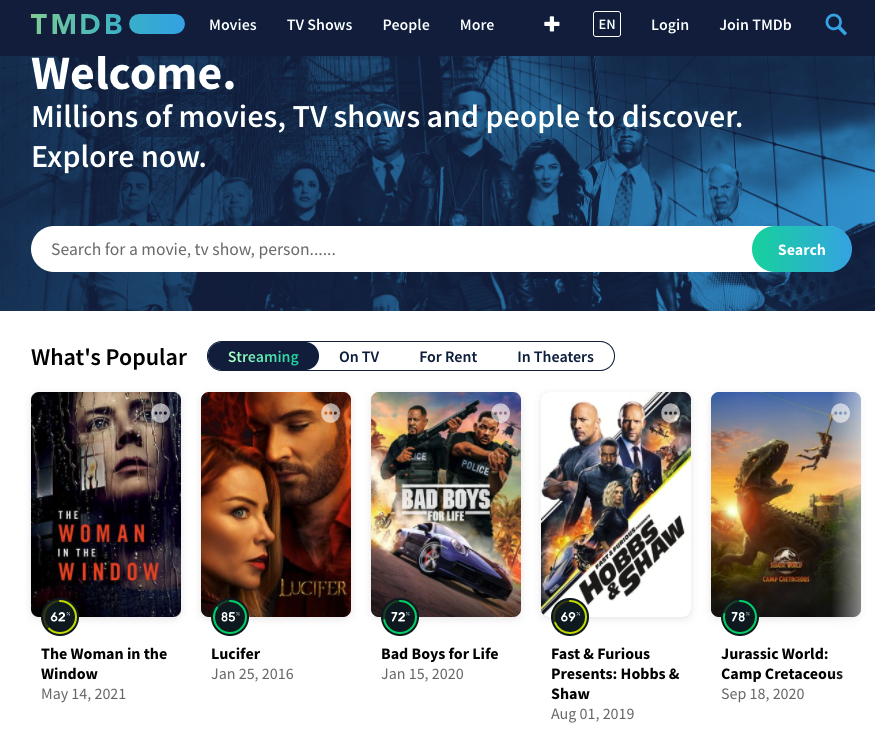

Summary: The Movie Database Analysis | Budget vs. Revenue and Budget vs. Ratings

Image provided by The Movie Database.
The Movie Database is a community built movie and TV database with access to data on over 600,000 films. For this project, we extracted data from the Movie Database's API to evaluate the relationship between a movie's budget and its performance.
To measure performance, I assessed whether budget impacted revenue and IMDb ratings for films across genres over the past five years. I reviewed the most popular genres in our database; adventure, action, science fiction, and family films.
This site provides the visualizations created as part of the analysis, as well as the source data and a comparison of relationships found.